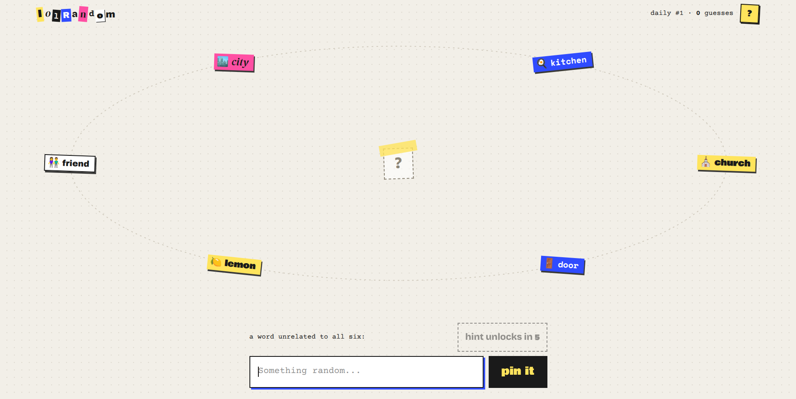

lolrandom
Python
NLP
Machine Learning
JavaScript
A word game where the goal is to say something the chain could not have predicted. I built the game, the scoring, the hint system and the little guy who gives the hints.

lolrandom is a browser-based game about being random xD
Given a word, think of another word that is as random as possible; a word that isn’t associated with the given word at all (with some room for error).
The game dons an early 2000s internet scene kid aesthetic. Click the awesome-face in the bottom right to get a hint in rawr xD speak *holds up spork*.
WIP
This game is in alpha, and will change in the coming months. If you have feedback, email me: saumirah@gmail.com
TODO
Platform
Engine
-
-
- A Daily is keyed by its date, the clock is read per request, and a test drives it across midnight and past a repeated seed. The fix was already in; the test is the thing that keeps it fixed.
-
- A memo and a concrete benchmark plan are in
docs/memos/embedding-models.md. ConceptNet Numberbatch is the first candidate. It needs a new artifact and a recalibrated win cut, so it is a project rather than a drop-in.
- A memo and a concrete benchmark plan are in
-
- SQLite on a Render disk (
LOLRANDOM_DB). Live runs survive a restart; games, guesses and hints are append-only;python3 -m engine.statsreads them. The statistics store a salted hash, never the cookie.
- SQLite on a Render disk (
-
- The score stays “rounds won” and the reaction escalates: a bigger sticker burst and a louder rawr-xD line as the chain grows. Per the decision to keep the scoring model and add the reward around it.
Cosmetic
-
- Deterministic word-to-emoji stickers, with the word label kept; the seed has a fixed one because it is the word you did not choose.
-
- Able to drag the network around (Mario 64)?
- Deferred to the next pass: the background, the UI elements and dragging are one coherent piece of art direction, not three small changes.
-
- It is a gentle dashed arc with the intermediate words on it now. No hover-only version and no off-canvas panel: the arc is the explanation.
-
- Player-facing copy only: the board, history, help panel and docs say “chain of association”; the code, ADRs and CONTEXT.md keep Bridge for the concept and Chain for the player’s word list.
-
- The board caption and every history heading show how many Pool words still win against the chain.
Questions/Thoughts
-
- It is SQLite on a disk now, one file, with a fallback to memory if the disk cannot be written. Still one process and one disk; that is the trade-off.
-
-
docs/memos/cs-degree.mdhas the decision rule keyed to immigration, industry, research and indie work. It is a question, not a code change.
-
-
docs/memos/hosting-costs.md: Render is about $7.25/month; Fly.io is about $2.34 for the same shape. Not overcharged, but about 3x the cheapest credible option; the memo says when the migration is worth it.
- This long todo list is very exciting, but daunting.
WIP
This game is in alpha, and will change in the coming months. If you have feedback, email me: saumirah@gmail.com